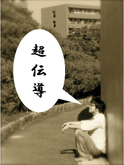

藤田泰輔


| 所属グループ | 高温超伝導 |
|---|---|
| 出身 | 兵庫県 |
| 卒業論文題目 | 低エネルギー放射光を用いた銅酸化物高温超伝導体La2-XSr2CuO4の角度分解光電子分光 |
| 修士論文題目 | 銅酸化物高温超伝導体の準粒子構造におけるポテンシャル乱れの効果の研究 |
| 原著論文 | 準備中 |
| 国際学会 |
Spectroscopies in Novel Superconductors 2007 (SNS2007) Sendai Internatinal Center, Japan on August 2007, poster session |
| 国内学会 |
1. 学会名：第22回放射光学会年会 題目：低エネルギー放射光角度分解光電子分光によるBi2Sr1.6Ln0.4CuO6+δの面外乱れの効果の研究 場所：東京大学(東京都) (2009.1) 口頭発表 2. 学会名：日本物理学会 第63回年次大会 題目：低エネルギー励起角度分解光電子分光によるBi2Sr1.6Ln0.4CuO6+δの面外の乱れの効果 場所：近畿大学(大阪府) (2008.3) 口頭発表 3. 学会名：日本物理学会 第62回年次大会 題目：Bi2Sr1.6Ln0.4CuO6+δ (Ln=La,Ga) の低エネルギー励起角度分解光電子分光 場所：北海道大学 (2007.9) 口頭発表 |
| 個人ページ | http://home.hiroshima-u.ac.jp/m072952/ |